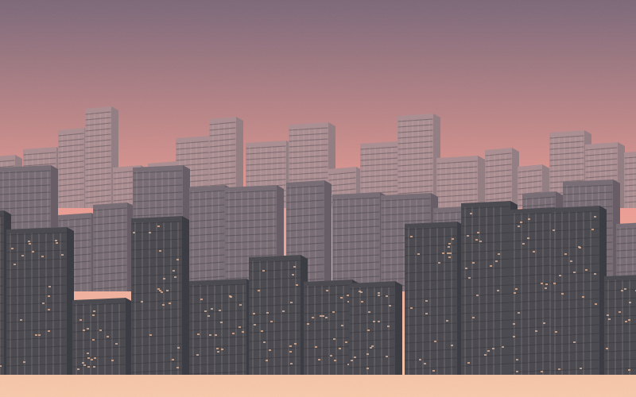

Project brief
The idea.
A broken streetlight and a water complaint concern different services, but both need a place to be recorded. SmartCityX brings complaints across four areas of city life into a single web platform.
Technology stack
- Java
- Spring Boot
- MongoDB
- HTML
- CSS
- JavaScript
How it works.
Citizen complaint
A reported problem provides the starting point for a city service record.
Service area
The platform covers traffic, waste, water and streetlights.
Complaint management
City service complaints can be managed together within the application.
Project access
- Live demo
- Unavailable
- Source repository
- Unavailable